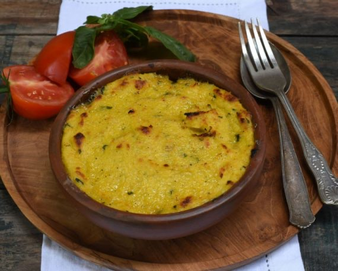

Recetas de Comidas chilenas

EL pastel de choclo es un plato que tiene su origen en la época de la colonia, correspondiendo a un plato mestizo que une el pino español con la pasta de choclo chilena, debiendo ser creado a manos de cocineras mapuches en las cocinas de los colonos españoles
Ingredientes
- 1 cucharada de aceite
- 2 cebolla en cuadrados pequeños
- 1500 gr de carne picada (posta negra)
- 11 cucharadita de Comino Molido Gourmet
- 11 cucharadita de Ají Color Gourmet
- 11 cucharada de Orégano Entero Gourmet
- 11 cucharadita de Condimento para Carne Gourmet
- 1½ taza de pasas
- 16 trutro cortos sin piel, cocidos doraditos y jugosos
- 13 huevos duros, cortados por la mitad
- 1½ taza de aceitunas negras
Pasos a seguir
- Calentar el aceite en un sartén grande, agregar la cebolla picada y cocinar hasta que esté transparente y blanda. Agregar la carne picada y los aliños, cocinar hasta que la carne esté cocida (el pino debe estar jugoso). Agregar las pasas y reservar.
- Agregar la salsa de tomate y la media taza de agua fría para ligar los sabores y cocinar por 5 minutos más,
en este tiempo se habrá reducido la salsa. Reservar.
- Para la capa de choclo, sacar los granos de la coronta y luego procesar junto a la albahaca deshidratada, hasta tener una pasta. Calentar la mantequilla en una olla, agregar la pasta de choclo y cocinar un par de minutos. Agregar la leche y cocinar revolviendo hasta tener una mezcla espesa. Aliñar con sal y albahaca picada. Dividir el pino en 6 fuentes individuales (levemente enmantequilladas) o en una fuente de greda grande. Poner 2 aceitunas, medio huevo duro y una presa de pollo en cada una de las fuentes.
Finalmente tapar con la pasta de choclo. Espolvorear con azúcar cada pastel.
- Calentar el horno a 190°C. Hornear los pasteles de choclo por 30 a 35 minutos o hasta que estén burbujeando y las cubiertas estén doradas.
Inicio